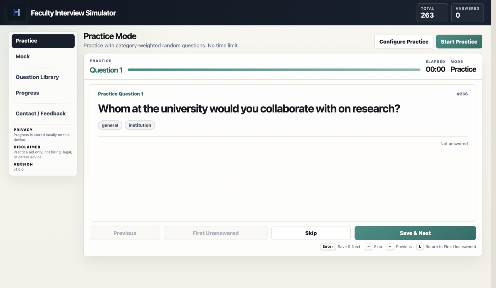
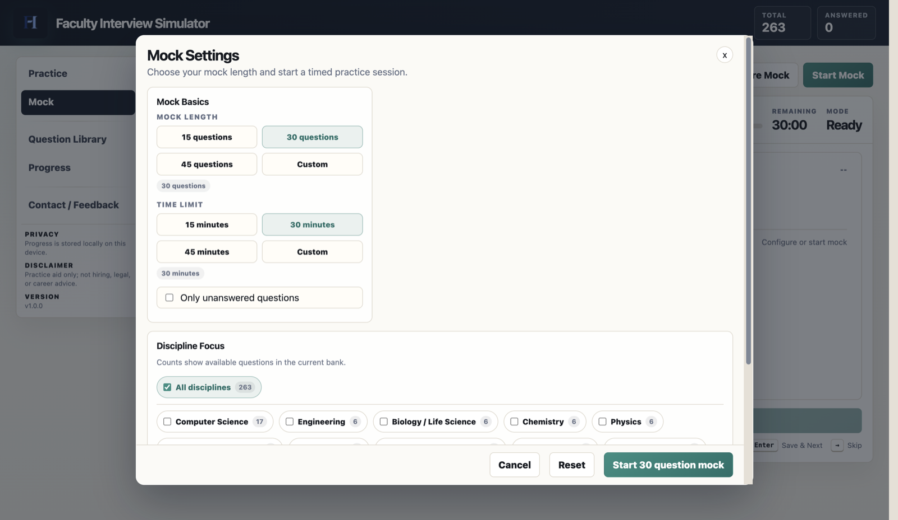
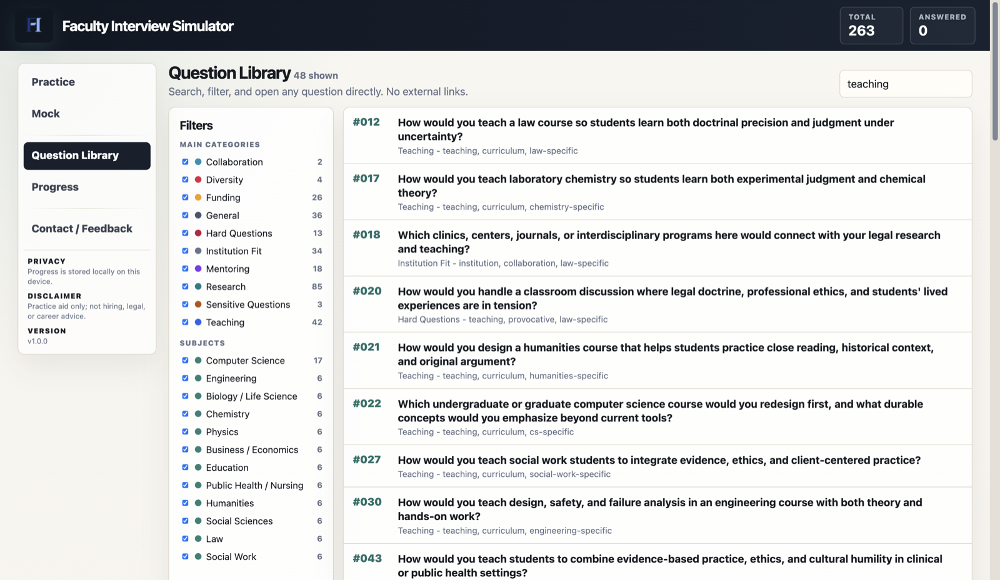
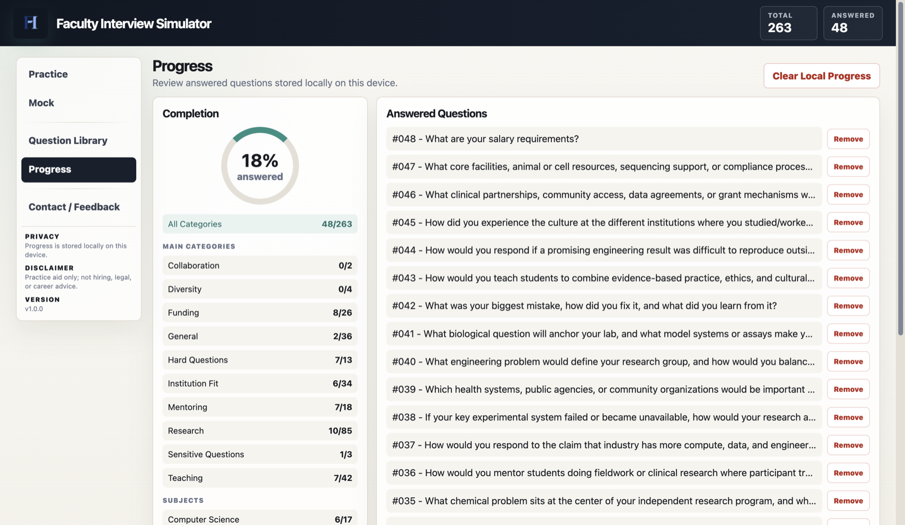

200+ prompts
Practice across research, teaching, service, leadership, mentoring, funding, hard questions, and institution fit.
The web version gives you 30 practice prompts. The full version adds the complete prompt set, saved progress, a searchable library, discipline filters, and timed mock sessions.
Buy full versionPractice across research, teaching, service, leadership, mentoring, funding, hard questions, and institution fit.
Timed mock interviews with configurable question count, time limit, category balance, and forward-only interview flow.
Search by keyword, topic, category, or discipline tag to prepare for campus visits, screening calls, research talks, and teaching demos.
Track answered prompts on your device without an account, hosted database, or uploaded answer history.
The full version is built around the real workflow: answer prompts out loud, save what you practiced, run timed mock sessions, search the library, and review progress before your interviews.




Purchase securely on Gumroad. You will receive the full simulator package from the product download page.
Key details about the full Faculty Interview Simulator.
Faculty Interview Simulator is preparation software for academic job candidates practicing faculty, lecturer, postdoc, and assistant professor interviews.
It is designed for PhD students, postdocs, lecturers, research fellows, and assistant professor candidates preparing for academic job market interviews.
The full version includes 200+ faculty interview prompts, Practice Mode, Mock Mode, a searchable prompt library, discipline filters, and progress review.
No. Your practice progress is stored on your own device, not in a hosted database.
The current online practice version runs in the browser with 30 prompts. The full version is delivered through Gumroad.
The first version focuses on structured practice, question coverage, timing, and preparation workflow rather than AI scoring or automated hiring advice.
No. Faculty Interview Simulator is an independent preparation tool. It is not affiliated with any university, department, hiring committee, or search committee.
Click Buy full version or Buy on Gumroad. Gumroad handles checkout and download delivery.